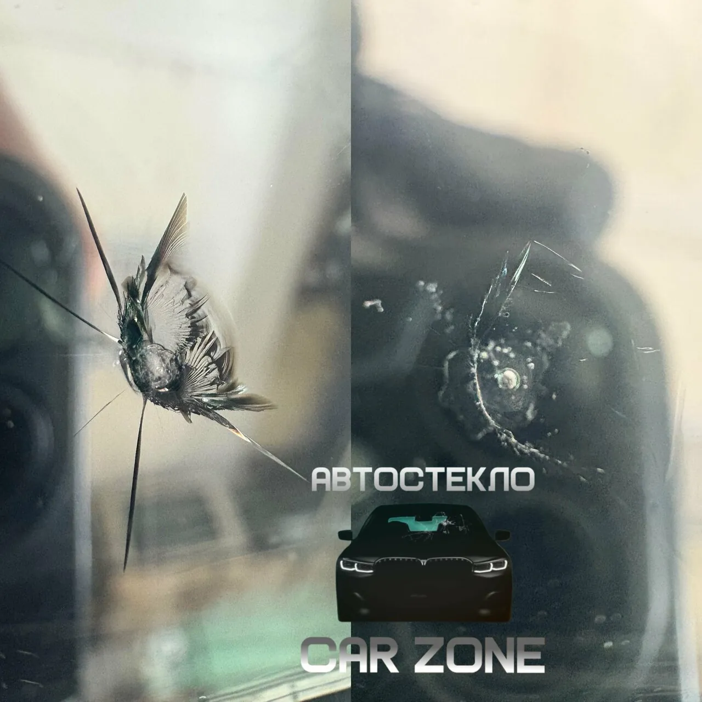
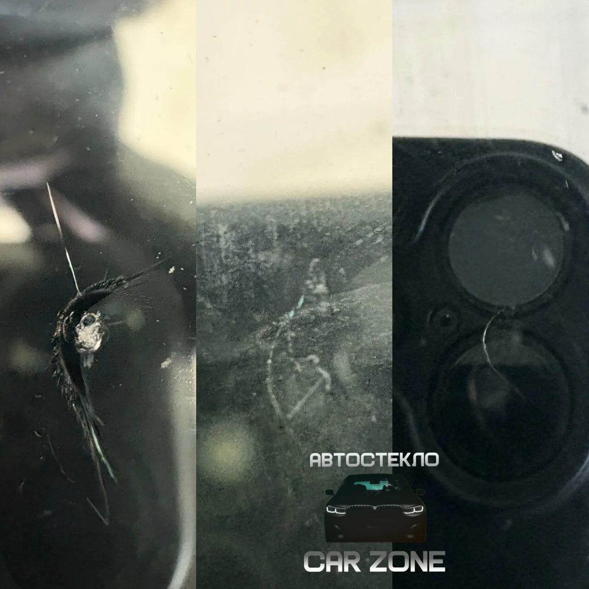
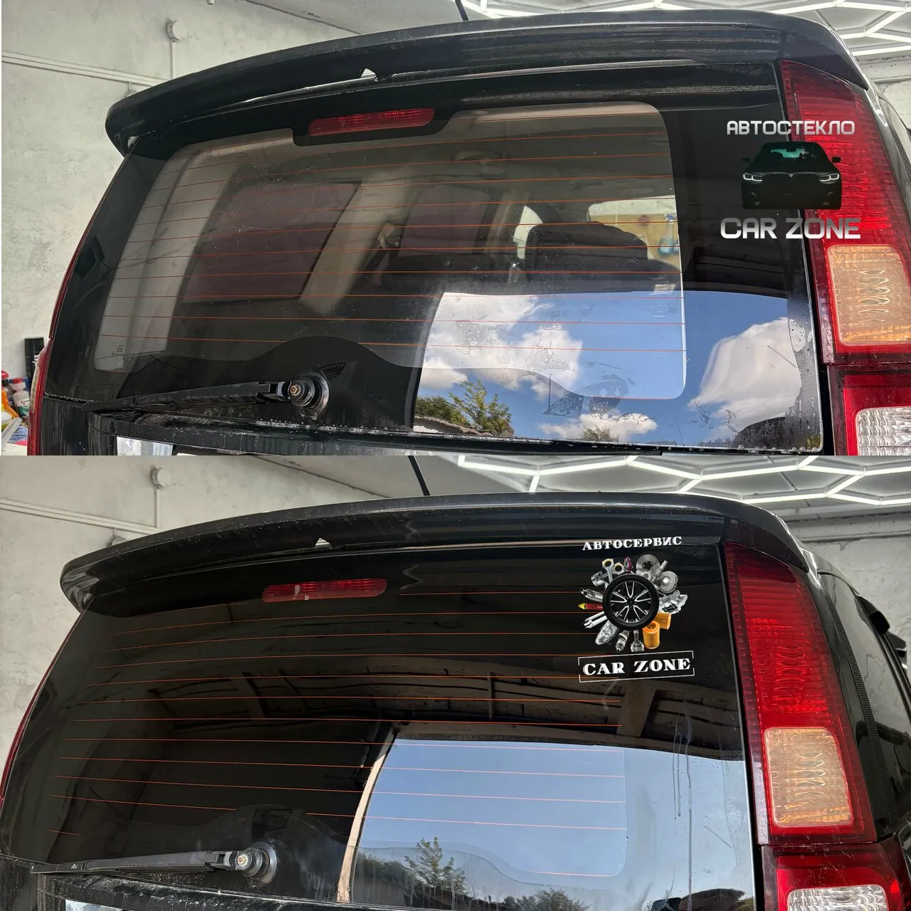
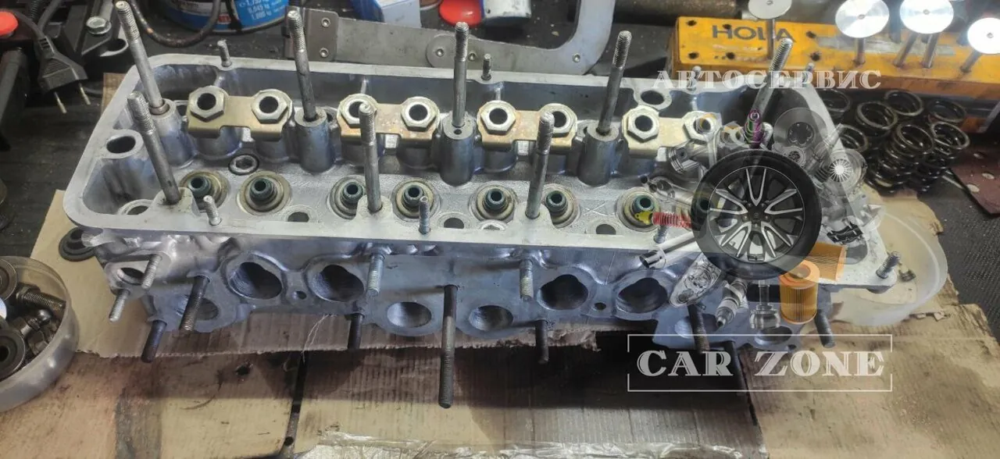
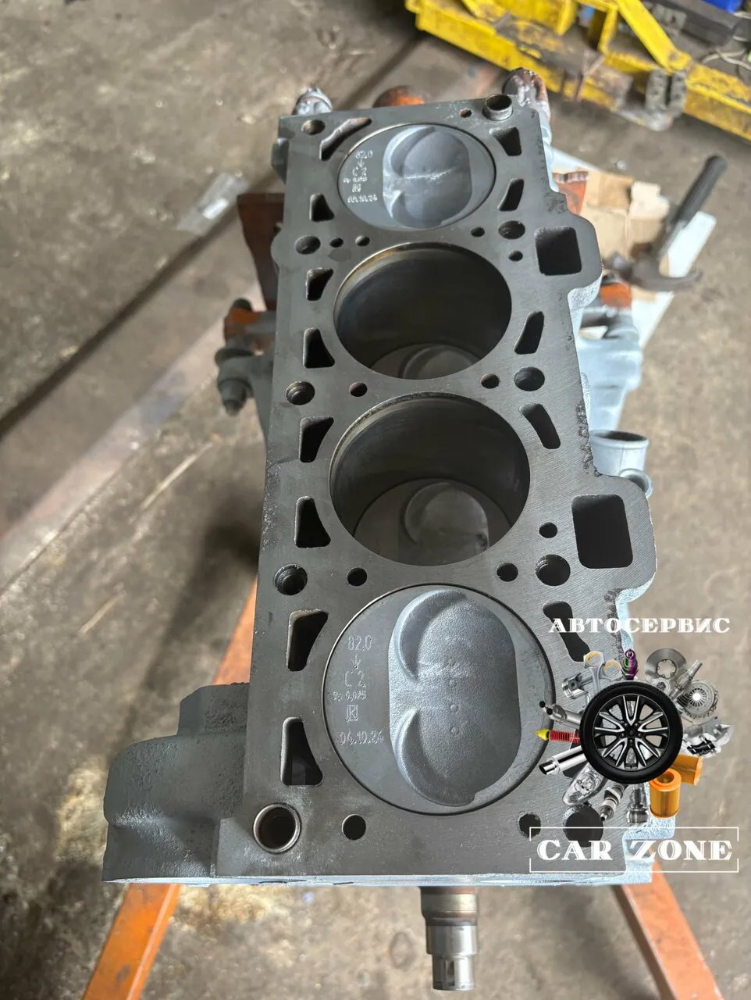
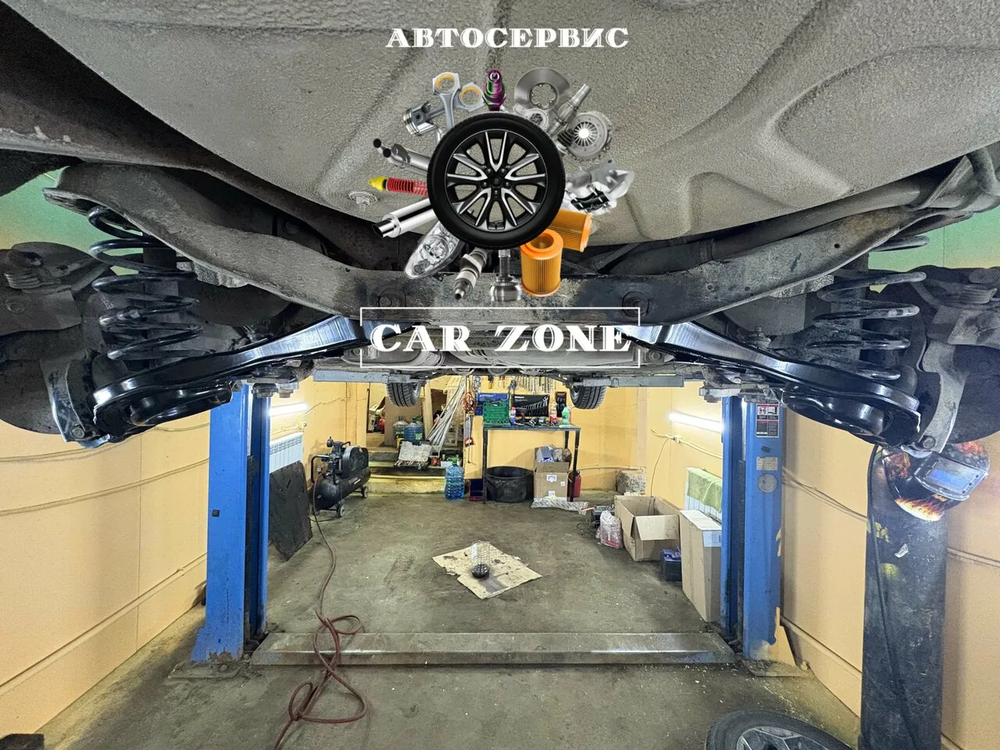
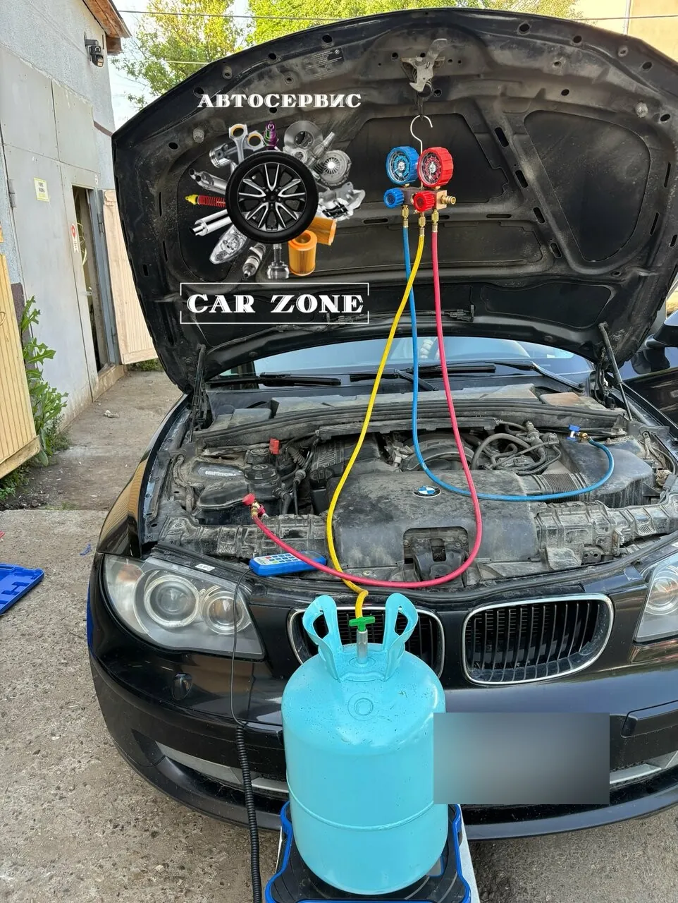
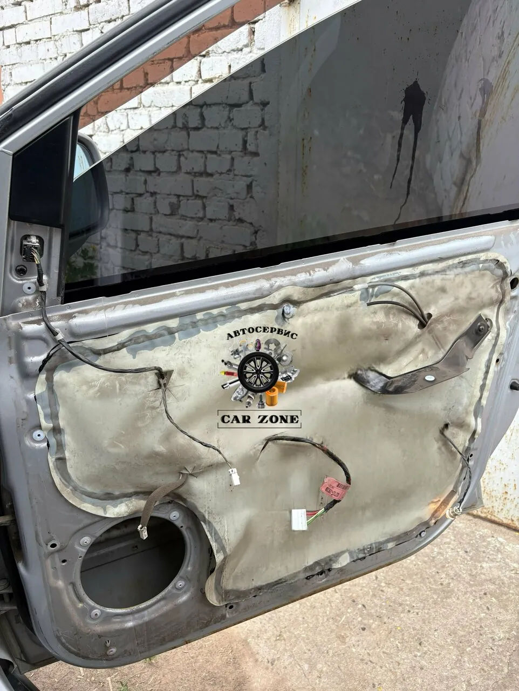
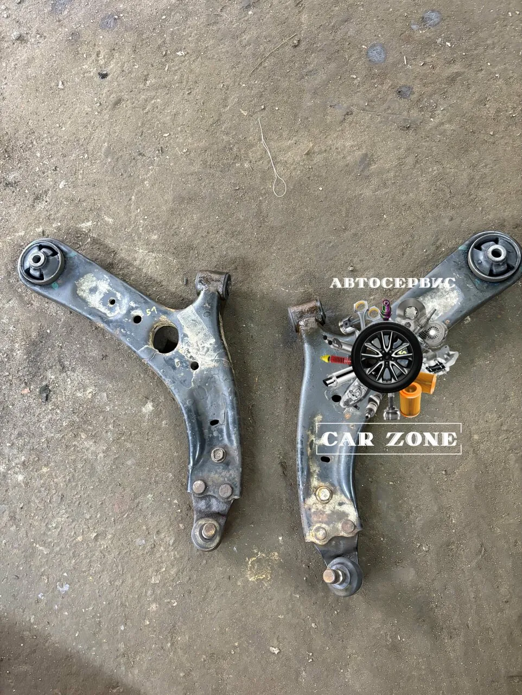
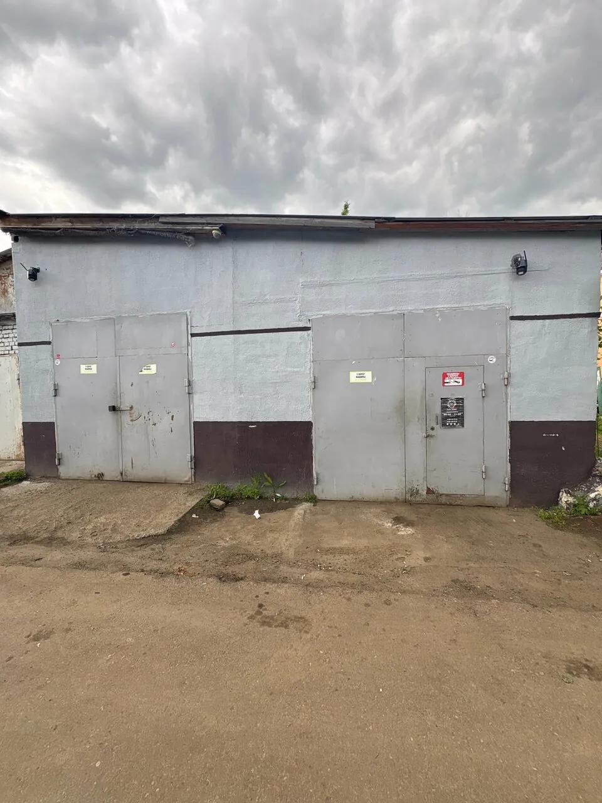

По дороге из Луховиц в Коломну прилетел камешек. Всё бы ничего, но трещина начала появляться на глазах прямо по мере движения 😥 Обратился к ребятам в Car Zone, сделали максимум по устранению дефекта, очень оперативно, на следующий же день стекло было отрихтовано. Рекомендую обращаться, сервис ответственный, спасибо спецам.
автостёкла
Один камешек – три разные цены
Чем раньше заехать со сколом, тем меньше придётся платить.
- 01
Скол
от 800 ₽Самый дешёвый вариант – пока скол не пополз дальше.
- 02
Трещина
от 1 000 ₽Трещины тоже ремонтируют – история Дениса чуть ниже.
- 03
Замена лобового
от 3 500 ₽Когда ремонт уже не поможет. Заднее стекло – от 3 500 ₽, боковое – от 1 000 ₽.


«По дороге из Луховиц в Коломну прилетел камешек. Всё бы ничего, но трещина начала появляться на глазах прямо по мере движения»
«на следующий же день стекло было отрихтовано.»
Денис Шутов
«Сложную паутинку на лобовом стекле Дмитрий успешно локализовал.»
Спичка
«Ремонтировал скол на лобовом стекле, сделали ОТОИЧНО!!!!»
Алексей Карпов
Сколами и тонировкой занимается мастер Дмитрий. Фото скола можно отправить в WhatsApp или Telegram.

тонировка
Тонировка и плёнка у того же мастера
- Тонировкаот 1 500 ₽
- Боковые стёклаот 2 000 ₽
- Лобовое стеклоот 3 000 ₽
- Атермальная плёнка4 000 ₽
- Снять старую плёнку и клейот 1 000 ₽
«Обратился по поводу тонировки , все быстро качественно, Дима красавчик знает свое дело, месяц назад делал у него же скол , сделал даже не видно.»
Александр В.
двигатель
Переберут мотор так, что он «шепчет»
Капитальный ремонт, ГБЦ, прогоревшие клапаны, ГРМ. Запчасти закажут сами.


«перебрали мне моторчик на моей ласточке. Приезжал пару раз смотрел как перебиралась, когда запчасти привозил, просто бомба чистая такая даже с завода не была.»
Евгений
«Приехал машина троила, парни сделали диагностику, выявили прогоревший клапан, перебрали, запчасти сами заказали по хорошей цене»
Сергей Ляхов
«после ремонта функционирует исправно и без каких-либо проблем( и перестал есть по литру масла на каждый 1000-й километр )»
Дмитрий Медведев, Volkswagen Touareg
Переборка двигателя – 50 000 ₽
- Снятие и установкаот 20 000 ₽
- Разборка и сборкаот 15 000 ₽
- Ремонт ГБЦот 6 000 ₽
- Мойка деталейот 5 000 ₽
- Полировка плоскостиот 5 000 ₽
запчасти
Не нужно ездить по магазинам за запчастями
- Позвонил+7 (900) 155-55-95
- Записалсяна удобное время
- Приехалзапчасти можно заказать здесь же
Шаги – из отзыва клиента: «Позвонил-записался-приехал.»
«Заказал сразу у них же запчасти, так как кататься по городу и тратить на это время не было желания. Запчасти пришли за пару дней. Пригнал - оставил машину сказали к вечеру сделают. Сделали раньше .»
А.
«Запчасти тоже можно заказать и намного дешевле чем в магазине, доставка на следующий день, бывает даже в этот же день»
Максим Л.
мелочи
Заметят то, о чём вы не спрашивали
«Приехал на замену масла, ребята увидели подтек на крышке, переклеили и даже денег не брали»
Евгений«Менял теплообменник на шкоде Октавии цена приятная сделали быстро увидели что с помпы подтекает и устранили»
Егор Мартынов«перед дальней дорогой спустило колесо, заехал, спросил, можно ли у них накачать, мастер сразу вынес компрессор и накачал колесо, заодно проверил все остальные.»
Владимир Сидоров«Записался на замену масла и приехал по времени, сидеть в очереди не пришлось, сделали достаточно быстро, даже саморезы новые на защите поменяли)»
Инкогнито 6644
работы
Что ещё делают в боксах на Зелёной




цены
Цены видно заранее
Цены начальные, точную стоимость уточните по телефону. Нажмите на раздел, чтобы раскрыть.
Стёкла и тонировка
- Ремонт сколаот 800 ₽
- Ремонт трещиныот 1 000 ₽
- Лобовое стеклоот 3 500 ₽
- Заднее стеклоот 3 500 ₽
- Вклейка заднего стеклаот 3 000 ₽
- Боковое стеклоот 1 000 ₽
- Зеркалаот 300 ₽
- Тонировкаот 1 500 ₽
- Тонировка лобовогоот 3 000 ₽
- Атермальная тонировка4 000 ₽
- Снятие плёнки и клеяот 1 000 ₽
Двигатель и ГРМ
- Переборка двигателя50 000 ₽
- Ремонт ГБЦ7 000 ₽
- Прокладка ГБЦ14 000 ₽
- Цепь ГРМ14 000 ₽
- Ремень ГРМ8 500 ₽
- Поршни12 000 ₽
- Помпа4 500 ₽
- Сальник распредвала3 500 ₽
- Поддон1 700 ₽
- Клапанная крышка1 500 ₽
- Термостат1 500 ₽
- Клапан350 ₽
- Притирка клапана250 ₽
- Маслосъёмный колпачок250 ₽
- Замер компрессииот 800 ₽
- Эндоскопияот 1 000 ₽
- Замена масла и всех фильтровот 1 300 ₽
Тормоза, ходовая, сцепление
- Передние колодки1 250 ₽
- Передние диски2 200 ₽
- Передние диски и колодки2 500 ₽
- То же на внедорожнике1 450 / 3 100 / 3 500 ₽
- Задние колодки (без эл. ручника)1 250 ₽
- Задние диски и колодки (без эл. ручника)2 500 ₽
- Диагностика ходовойот 350 ₽
- Рулевые наконечники1 500 ₽
- Тяги с наконечниками3 200 ₽
- Ступичный подшипник2 000 ₽
- ШРУС1 700 ₽
- Сайлентблоки балки650 ₽
- Сцепление8 500 ₽
- Рабочий цилиндр1 500 ₽
Кондиционер, охлаждение, электрика
- Заправка кондиционераот 1 850 ₽
- Диагностика кондиционераот 500 ₽
- Радиатор2 000 ₽
- Патрубок800 ₽
- Расширительный бачок800 ₽
- Генератор3 000 ₽
- Стартер2 800 ₽
- Виброизоляция1 600 ₽
- Эвакуатор2 000 ₽
Гарантия на работы: {{условия гарантии}}
отзывы
Что говорят о нас наши клиенты
5,069 оценок и 56 отзывов на Яндекс Картах
Отличный автосервис. Ребята подскажут что и как лучше, лишнего не накручивают, что мне уже нравиться 👍👍👍 перебрали мне моторчик на моей ласточке. Приезжал пару раз смотрел как перебиралась, когда запчасти привозил, просто бомба чистая такая даже с завода не была.Приехал на замену масла, ребята увидели подтек на крышке, переклеили и даже денег не брали🔥Мотор шепчет просто))) доволен как удав☺️
Сложную паутинку на лобовом стекле Дмитрий успешно локализовал. Выполнил работу качественно, без халтуры, эстетично.. Мастер ориентирован на высокий результат. Рекомендую.
Все здорово и без лишних навязываний. Позвонил-записался-приехал. Были вопросы по подвески, сделали диагностику и мои догадки подтвердились. Заказал сразу у них же запчасти, так как кататься по городу и тратить на это время не было желания. Запчасти пришли за пару дней. Пригнал - оставил машину сказали к вечеру сделают. Сделали раньше . Все отлично , остались положительные эмоции!
Обратился по поводу тонировки , все быстро качественно, Дима красавчик знает свое дело, месяц назад делал у него же скол , сделал даже не видно.
Благодарим вас за помощь.Был оказан качественный сервис по починке автомобиля Фольксваген Туарег(больше ему подходит 33 несчастья или «История о том как у меня прогорел один из клапанов») ,после ремонта функционирует исправно и без каких-либо проблем( и перестал есть по литру масла на каждый 1000-й километр ).В следующий раз предоставлять на ремонт автомобиль буду в этот сервис.Спасибо за работу!
Приехал машина троила, парни сделали диагностику, выявили прогоревший клапан, перебрали, запчасти сами заказали по хорошей цене, все работает очень здорово, спасибо большое, дешево и очень качественно, рекомендую данный сервис
Приехал с нештатной ситуацией, перед дальней дорогой спустило колесо, заехал, спросил, можно ли у них накачать, мастер сразу вынес компрессор и накачал колесо, заодно проверил все остальные. Хорошее место, буду приезжать еще!
Парни молодцы, делают качественно, в срок и по приятным ценам, в других сервисах дороже. Запчасти тоже можно заказать и намного дешевле чем в магазине, доставка на следующий день, бывает даже в этот же день, рекомендую, все на высшем уровне
Записался на замену масла и приехал по времени, сидеть в очереди не пришлось, сделали достаточно быстро, даже саморезы новые на защите поменяли)
Отличный сервис, грамотные специалисты, обслужили тормоза по высшему разряду, у ребят заказала сразу же запчасти по хорошей цене, на следующий день уже было все сделано, большое спасибо, рекомендую
Спасибо большое парням, отличный сервис, начиная от заказа запчастей, переборки моторов, заправки кондиционеров, тонировки, сколов, в общем целый спектр услуг с высоким качеством, рекомендую
как найти
Зелёная, 32А – открыто каждый день до 21:00
+7 (900) 155-55-95- ЧасыКаждый день 9:00–21:00
- АдресКоломна, Зелёная улица, 32А. Остановка «Улица Калинина» – 161 м.
- Написать
- Парковка
- Wi-Fi
- Можно с собакой
- Карта, наличные, перевод

Открыть на Яндекс КартахМаршрут до сервиса